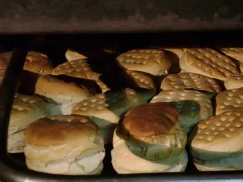
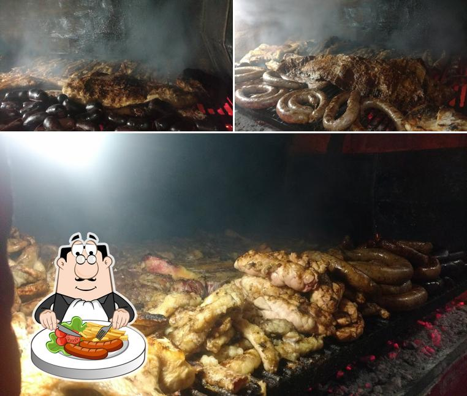
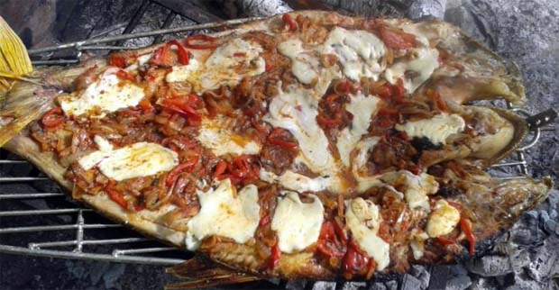

Gastronomía en Gualeguay
La ciudad de Gualeguay ofrece una rica tradición culinaria que combina recetas criollas con influencias modernas. Entre sus platos típicos se destacan el asado entrerriano, las empanadas caseras y los pescados de río preparados de diversas maneras.
Platos típicos
Galería de imágenes


